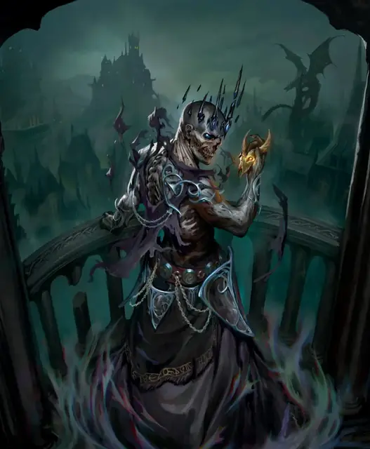

Азалин Рекс
Azalin Rex
Средняя Нежить (Волшебник), Нейтральная Злая, именной НИП

Класс Защиты 20 Инициатива +17 (27)
Хиты 390 (52к8 + 156)
Скорость 30 футов
| мод | спас | ||
|---|---|---|---|
| СИЛ | 11 | +0 | +0 |
| ЛОВ | 16 | +3 | +10 |
| ТЕЛ | 16 | +3 | +10 |
| мод | спас | ||
|---|---|---|---|
| ИНТ | 21 | +5 | +12 |
| МДР | 17 | +3 | +10 |
| ХАР | 16 | +3 | +3 |
Сопротивление урону Холод, Электричество
Иммунитеты Некротический, Яд; Испуганный, Истощение, Отравленный, Очарованный, Парализованный
Чувства пассивное Восприятие 20, Истинное зрение 120 футов
Языки Все
Опасность 23 (50 000 опыта или 62 000 опыта в Домене; БВ +7)
Особенности
Восстановление Тёмного владыки. Если филактерия Азалина цела, спустя 2к10 дней после смерти он возрождается с полными Хитами в ближайшем незанятом пространстве рядом с ней. Если филактерия Азалина уничтожена, он возрождается спустя 4к10 дней в замке Авернус в Дарконе.
Легендарное сопротивление (4/день, или 5/день в Домене). Если Азалин проваливает спасбросок, он вместо этого может в нём преуспеть.
Действия
Мультиатака. Азалин совершает три атаки Парализующим касанием или Потусторонней вспышкой в любой комбинации.
Парализующее касание. Бросок рукопашной атаки: +12, досягаемость 5 фт. Попадание: 15 (3к6 + 5) урона Холодом, и цель Парализована до начала следующего хода Азалина.
Потусторонняя вспышка. Бросок рукопашной или дальнобойной атаки: +12, досягаемость 5 фт. или дистанция 120 фт. Попадание: 31 (4к12 + 5) Силового урона.
Сотворение заклинаний. Азалин Рекс сотворяет одно из следующих заклинаний, не нуждаясь в компонентах заклинания (заклинательная характеристика — Интеллект, Сл спасброска заклинаний 20, +12 к попаданию атак заклинаний):
Неограниченно: Волшебная рука, Молния, версия 5-го уровня, Невидимость, Обнаружение магии, Обнаружение мыслей, Рассеивание магии, Фокусы
2/день каждое: Изменение памяти, Наблюдение, Переносящая дверь, Планарный переход, Поднятие мертвеца
1/день каждое: Перст смерти, Слово силы: смерть, Цепная молния
Реакции
Поглощение заклинания. Азалин сотворяет Контрзаклинание в ответ на его условие (заклинательная характеристика — та же, что для Сотворения заклинаний). Если существо проваливает спасбросок против этого Контрзаклинания, Азалин крадёт секрет спровоцировавшего эту Реакцию заклинания. Он может сотворить это заклинание один раз в течение 1 часа или если не использует эту Реакцию снова (заклинательная характеристика — та же, что для Сотворения заклинаний).
Легендарные действия
У этого существа есть 3 использования Легендарных действий (или 4 использования в Домене); оно может немедленно после окончания хода другого существа потратить одно использование, чтобы совершить одно из следующих действий. Существо восполняет все потраченные использования в начале каждого своего хода.
Потусторонний телепорт. Азалин телепортируется на расстояние вплоть до 60 футов в видимое им незанятое пространство и совершает одну атаку Парализующим касанием или Потусторонней вспышкой.
Запретное знание. Спасбросок Интеллекта: Сл 20, вплоть до трёх видимых Азалином существ в пределах 60 футов. Провал: 28 (8к6) Психического урона, и цель Ошеломлена до конца следующего хода Азалина. Успех: Только половина урона. Провал или успех: Азалин не может совершить это действие снова до начала своего следующего хода.
Бонус мастерства +7
Азалин Рекс
Несмиримый Тёмный владыка
Азалин правил Дарконом как тиран и король-волшебник, которому повиновались и живые, и мёртвые. Впервые представ перед подданными, он принял иллюзию того облика, которым обладал при жизни: темноволосого мужчины средних лет с надменной осанкой. Однако подлинное его обличие — иссохшее тело лича, чьи глаза пылают богохульным огнём.
С тех пор как Азалин оказался в Доменах Ужаса, он утратил способность постигать новую магию. Для волшебника, что отрёкся от смертности ради тайных изысканий, это стало величайшей мукой. Несмотря на ограничения, Азалин оставался одним из немногих Тёмных владык, кто понимал таинственную природу Доменов Ужаса. Поколениями он пытался вырваться из Даркона. Его магические злодеяния вновь и вновь перекраивали Даркон и прочие Домены Ужаса. Однако все эти старания дарили Азалину лишь мимолётный проблеск свободы, а нарушения метафизических законов неизменно возвращались к изначальным предначертаниям Тёмных Сил. И всё же Азалин не соглашался оставаться узником. Его последний замысел увенчался Часом Вознесения и разрушением замка Авернус. С тех пор Тёмного владыку в Дарконе никто не видел, а само королевство начало приходить в упадок.
Приведённый блок статистики описывает Азалина, каким он был до своего исчезновения и каким предстанет, если вернётся. В настоящее время филактерией Азалина служит золотой амулет, который он носит при себе. Если амулет уничтожить, изначальная филактерия Азалина — недвижимый драконий череп в руинах замка Авернус — пробудится, и дух лича вновь вернётся в Даркон, если его тело будет разрушено.
История Азалина
Фиран Зал'хонан был аристократом и наследником города-государства Кнарл в мире Оэрт. Адепт магии, Фиран принял титул «азал’лан», что означает «король-волшебник», когда взошёл на трон. Его правление отличалось суровыми законами и жестокой военной экспансией, но народ процветал, ибо жизнь людей наполняли волшебные чудеса.
Когда Фиран начал стареть, он задумался о наследнике. Его сын Айрик был великодушным и обаятельным, однако в глазах Фирана — мягким и непригодным для трона. Сколько бы Фиран ни пытался преподать сыну жестокие уроки мира, добрый нрав Айрика не поддавался циничному мировоззрению отца. Это противостояние достигло предела, когда Фиран застиг Айрика за освобождением политических узников. Он мог бы закрыть глаза на преступление или помиловать сына; вместо этого Фиран лично взялся за топор во время казни.
Смерть сына терзала Фирана все последующие годы, но он всё больше убеждал себя, что лишь он один достоин править. Исследуя таинства смерти, он раскрыл секрет превращения в лича. Приняв переход в нежизнь, Фиран правил ещё долгие десятилетия, возвеличивая Кнарл и наживая множество врагов. В конце концов слухи о магии, способной воскресить Айрика, выманили Фирана из дома. Во время поисков на правителя напали наёмники. Спасаясь от убийц, Фиран укрылся в тумане. Когда туман рассеялся, он оказался в Баровии.
В Баровии крестьяне, с которыми столкнулся Фиран, ошибочно расслышали его титул и прозвали его Азалином. Вскоре Азалин встретился с правителем Баровии, Страдом фон Заровичем. Два тирана прониклись взаимным уважением, и Азалин обучил Страда многому из магического искусства. Вместе они глубоко продвинулись в понимании природы Доменов Ужаса и предприняли немало попыток покинуть их. Однако замыслы их провалились и привели лишь к тому, что другие земли — например, домен Мордент — оказались втянуты в орбиту Баровии. Со временем уважение тиранов переросло в лютую ненависть. Прежде чем они успели уничтожить друг друга, Азалин шагнул в Туманы, и перед ним распростёрся домен Даркон.
Домен Азалина
Даркон, домен Азалина, изменяется из-за его присутствия, что создаёт следующие эффекты:
• Закрытие границ. Когда Азалин находится в домене, он способен по желанию закрывать или открывать границы Даркона. Когда границы закрыты, Туманы вокруг Даркона наполняются нежитью. Всякий раз, когда существо входит в Туманы, одно Враждебное Сращение зомби появляется в случайном незанятом пространстве в пределах 30 футов от этого существа.
• Владыка мёртвых. Когда Азалин находится в домене, он может сотворить заклинание Подсматривание, не нуждаясь в Материальных компонентах (заклинательная характеристика — та же, что для его действия Сотворение заклинаний). При сотворении заклинания таким образом Азалин может поместить сенсор в любую Нежить в Дарконе со значением Интеллекта 6 или меньше, даже если та находится дальше 1 мили от него. Кроме того, Азалин может общаться устами той Нежити, в которую помещён сенсор.
• Никаких тайн. Всякий раз, когда существо в Дарконе сотворяет заклинание с использованием ячейки 5-го круга или выше, Азалин узнаёт имя и местоположение этого существа. Заклинание Необнаружимость блокирует этот эффект.
Если Азалин умирает, все эти эффекты мгновенно исчезают.